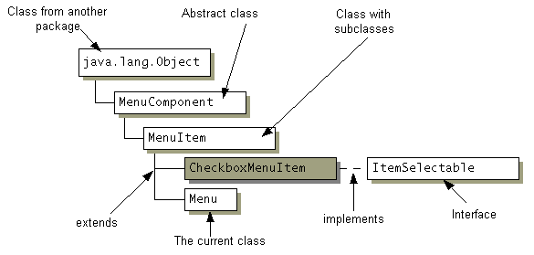

| Documentation Contents |
| CONTENTS | PREV | NEXT |
Appendix 3:
In a class diagram, we visually distinguish the different kinds of Java entities, as follows:
The interface: A rounded rectangle
Most of these elements are shown below. The class or interface being described in the current chapter is shaded grey (this is not applicable for package class diagrams). A solid line represents extends , while a dotted line represents implements .

Copyright © 1993, 2011, Oracle and/or its affiliates. All rights reserved. Please send comments using this Feedback page. |
Java Technology |